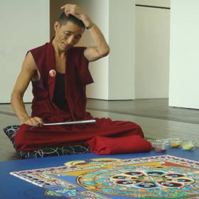
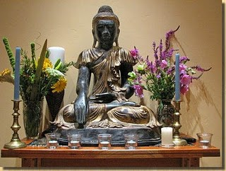

Dışa bakan ruyadadır, içe bakan uyanışta
Kimi zaman mutzsuzluğun, gerginliğin içinde bulabiliyorum kendimi. Bazen basit ya da karmaşık, teknik bir sebepten kaynaklanır gerginliğim. Bir şey olmuştur, yapılması gereken bir iş gecikmiştir gibi teknik şeyler. Bazen de güne gergin uyanabilirim. Daha sebep olacak hiçbirşey yapmamışken öyle başlar gün. (Bir arkadaşımın deyimiyle kozmik gerginlik) Böylece gerginliklerimi ikiye ayırmış oldum; kozmik ve teknik. Kozmiklerin sebebini bilmiyorum, teknik gerginlikler ise benim dışımda geliştiği zaman yapacak birşeyim yok gibi görünüyor. Oturup can sıkmaktan, mutsuz olmaktan başka.
Sonra zamanla öğrendim ki gerçek böyle değil. Benle alakalı ya da alakasız gelişen herhangi bir olayın ve ya sabah uyandığımda üzerime anlamsızca çöken karanlığın etkisi aynı noktadan kaynaklanıyor. Benim durumlarla olan ilişkimden. Yavaş yavaş bunu farketmeye başladıkça, öğrenmeye çabaladığım stratejiler daha bir işe yarar oldu. Düşman (kozmik ya da teknik) ne kadar kalabalık ya da güçlü olursa olsun, çatışmanın merkezini anlayıp çözebildiğim sürece her türlü zarardan, gerginlikten, tedirginlikten vs, korunabilirim. Peki çatışmanın merkezinde ne var? Tabiki benim durumla olan ilişkim. Bu durumda nereye vardım. Cevabı içerde bulduktan sonra dış düşmanlarla barışmak çok kolay bir iş. Mutlu, sakin küçük bir dere gibi kocaman kayaların arasında şırıl şırıl akar giderim ondan sonra.
E peki ben bunları niye yazdım? Şöyle bir bakınca pek de bilmediğin birşey söylediğimi sanmıyorum. Şu yüzden yazdım. Cevapları kendin bulmak, durumlarla olan ilişkilerini doğru biçimde tanımlamak ve bu sırada seni yavaşlatan, boğan bağlarından adım adım kurtulmak kolay bir iş değil. Yardım almak gerekebilir. Bizzat deneyimlediğim ve her fırsatta paylaşma heyacanı yaşadığım Vipassana meditasyonu bu konuda bildiğim en etkili, en gerçek yöntem. Gerçek derken kastım, bir takım mistik öğretiler üzerine değil, tamamen fiziksel gerçeklerin üzerine kurulu olması. Diğer taraftan, son zamanlarda moda olan yöntemler gibi, öğreti ücreti, aydınlanma dahil tam pansiyon yaz kampı bedeli gibi dünyevi para hesapları yapmak zorunda değilsin. Çünkü bu kurslar tamamen gönüllü bağışlarla gerçekleşiyor. Neyse, Vipassana’yı anlatmaya çabalamak benim işim değil. Zaten deneyimlendiğinde anlam kazanacak birşey. Ama haziran ayı içinde bir kurs yapılacağını duyurmak ve bununla ilgili kaynakları paylaşmak sanırım heyecanımı yatıştıracak. Aşağıdaki paragrafları vipassana web sitesinden ekledim.Ayrıntılı bilgiler, dökümanlar, kurs bilgileri ve başvuru için bakacağınız yer http://www.tr.dhamma.org/ ‘ dır arkadaşlar..
“Olanı olduğu gibi görmek anlamına gelen Vipassana, Hindistan’ın en eski meditasyon tekniklerinden biridir. Bu teknik, 2500 yıldan daha uzun bir süre önce Gotama Buddha tarafından yeniden keşfedilmiş ve evrensel hastalıklara evrensel bir çare, yani bir “yaşama sanatı” olarak öğretilmeye başlanmıştır.”
“Vipassana, kendi kendini gözlemle gelen bir kişisel dönüşüm yoludur. Beden ile zihin arasındaki derin bağlantı üzerinde odaklanır. Bu bağlantı, bedenin yaşamını şekillendiren ve zihnin yaşamına da sürekli bağlı olan ve onu koşullayan bedensel hisler üzerine disiplinli bir şekilde dikkatin yoğunlaştırılması ile doğrudan deneyimlenebilir. Bu gözlem temelli, kendini keşif yolculuğudur zihin ve bedenin ortak kökenine giden, ve zihinsel kirliliği eriterek dengeli, sevgi ve şefkat dolu bir zihinle noktalanan.”
“İnsanın düşüncelerini, duygularını, yargılarını ve duyumlarını işleten bilimsel yasalar anlaşılır hale gelir. Doğrudan deneyimle, kişinin ilerleyişinin ya da gerileyişinin, ıstırabı nasıl ürettiğinin ya da ondan nasıl özgürleştiğinin doğası anlaşılır. Yaşam, artan farkındalıkla, aldanmadan uzak, öz-denetim ve huzur ile nitelik kazanır.”
Ou-San


{kind=link}
{kind=link}
klasik itirazlarımı sıralayıp yazılı kayda geçmiş bu anlamsızlığa, çakma sıfatını yazılı olarak da koymamış bulunmayayım:
tarihi boyunca düşünce ve meditasyonun türlü çeşidine ev sahipliği yapmış, tasavvufun, içsel yolculuğu hedefleyen türlü çeşit ayinin dört bir yanında dolu olduğu bir ülkede yaşayıp da, onlardan hiç bir biçimde haberdar olmaksızın, tütsüler yakıp kel kafaya vurarak şakralar açmak başlı başına özentilik gibi geliyor en başında…
daha da önemlisi, o sopa sanılan şeyin gayet güzel üfleniyor olmasından duyulan habersizlik değil elbet, benim bu antipatiyle bile öğrenebildiğim kadarıyla vejeteryanlık, alkol, tütün vb. uyuşturucu (kriminal anlamıyla değil yani, ama kuşkusuz o da) maddelerden uzakta bir arınma seansı falan gibi bazı hazırlık süreçlerinin, vietnamda, tayland’da ve benzeri mekanlarda şart tutulması…
eh türkiye’de bir üniversitenin dağcılık ve kampçılık kolunun aktivitesinden farksız geçen planlamalar, işin içinde kesinlikle para yok, ama gönüllü bağışlar ve masraf paylaşımı hikayesi falan işin iyice suyunu çıkarıyor.
klimaları açıp rüzgarı hissediyor musunuz diye soran çakma yogilerin taksimde otelde seminer verdiği bir dünyaya kıyasla, bir grup hippinin kendilerine böyle bir hayat döngüsü yaratmasına itirazım yok elbette, yolları açık olsun. ama gözlerini seveyim olayın içine güya maddiyattan arınmışlar havasını sokup midemi bulandırmasınlar.
siz de zeki çocuklarsınız, illa içinize yolculuk arıyorsanız mevlana’nın şems’e aşkını okuyun bir sefer de… hep kel kafaya vurup şakra açmakla olmuyor…
Loker kardesim, elestirilerinin geldigi noktayi cok iyi anliyorum ki bence o noktada haklisin, ama o noktadan gelip yonelttigin dogrultu, bu yazinin konusunu teskil eden Vipassana Meditasyonu, bana biraz yanlis geliyor. Vipassana Turkiye’nin nasil calistigini bilmiyorum, ama Hindistanda gordugum Vipassana’nin calisma sistemi Hindistan gibi memlekette bile, ki bunu bir yandan hem dogu felsefesi turizmiyle boku cikmisligi ama ote yandan da cesitlilik bollugu ile almis yurumuslugu anlaminda soyluyorum, acik ara en saygi duyulan ve en az bozulmus yol olarak biliniyor. Neden oldugunu anlamak zor degil, birincisi 14 gunluk kurs boyunca konusmak yasak, boylelikle insan iliskilerinden kaynaklanan sululuklar yasanmiyor. Hoca yogi mogi yok, butun vipassana merkezleri ayni videoyu kullaniyor egitim amacli olarak, o da zaten gunde iki kere kisa bir ders izliyorsun hoca videodan o gun neye nasil medite edicegini anlatiyor. Sonra butun gun tek basinasin. Islerin yurumesine yardimci olan eski ogrenciler falan var ama onlar daha cok lojistik islerle ilgilenme derdiler. Kendi basina kendinle takiliyorsun 14 gun boyunca, bol bol ve acili meditasyon da cabasi (gunde 12 saat minderde oturursan ayak mayak kalmaz)O yuzden oyle cakma cikma bir sey olmuyor, esoterik bir olay da yok, hardcore derinliksiz sade meditasyon. Hipilik mipilik hic bir sey yok, hayat bicimi falan da degil. Simdi bu dediklerim Hindistandaki uygulanma sekli, Turkiyedeki hakkinda hic bir fikrim yok, icine su katilip ayran yapilmissa sonuna kadar haklisin, ama Hindistandaki gibi yuruyorsa isler o zaman bir daha dusun derim.(yurumuyorsa zaten onu adi vipassana meditasyonu degil, abdurrezzak efendi meditasyonu olur, sonucda bu kac bin yillik bir teknik ve belli bir yontemi var, hic bir sey keyfi degil)
Mevlana konusu da, abi turkiyede dogduk diye Mevlana mi okumak zorundayiz demek ister bu gonul, hindistan da dogan da buda okumak mi zorunda. Gecen burda Kanadada Jeremmy ile karsilastik belki taniyorsundur, Vancouverdan cikip yola istanbula yerlesmis neyzen olmaya kasan sufilige gonul vermis guzel bir insan,buraya iki haftaligina ziyarete gelmisti. O zaman onu da istanbulda yakaladigin yerde ebele geri gonder buraya gelsin burada kitsilano yerlilerinin mitolojisini calissin, yok oyle yagma mevlana bizimdir bizim kalacak de ona. ama tahminim senin elestirin ozentilere, ozeniyorsaniz gidin mevlanaya ozenin budaya ozenicenize diyosun da, abi allahin ozentisi zaten birak neye isterse ozensin yaziktir. (hatta mevlanaya ozenmedikleri daha iyi, onu da ayran etseler daha mi iyi)
cakma yogilere elestirilerine sonuna kadar katilsam da, vipassana’nin cevap hakkini buda askiyla kullanmak istedim 🙂
benim anlamadigim bu icsel yolculuga hevesli bireyler,ekipler neden bursanin uludaginda tele vole programlarindan yakinen bildigimiz grand yazici gibi şu yasadigimiz sistemin en somurgeci karakterlerinin gonullerini eglendirdigi bir oteli secip paket program meditasyon verilerini bunyeye yukleme ihtiyaci ve istegi duymalari ve bunu yaymaya calismalari..eger sehirden, insanlardan bu kadar bikilmissa ,icsel yolculuk alacagin birkac malzemeyle varacagin bir yayla ,bir tepede izleyecegin binlerce yillik meditasyon teknikleri ile derleyecegin bir formatta devam edemiyor…ama sen bu dunyevi ihtiyaclara ,yemek yatak gibi seylere bulasma biz bunu en tiki otellerde cozuyoruz sen gel gonlunce aydinlan bir ucret istemiyoruz ama zaten bagislar ve masraf paylasimi ile cozelim…
yani derdim bu aydinlanma yolunu secen insanlarin neden kendi formatlarini olusturamamalari ve yuzune bakmadan da olsa abuk sabuk bir sosyallesmeye dahil olmalari…evet hindistanin daglarinda ,zaten buram buram kokan o doganin dogalliginda lineer olmayan bir zaman algisiyla gecen yuzyillar boyunca gelistirilen meditasyon teknikleriyle kendi yolunda ilerleyen bireyler…bizim burda da paket program Grand Yazici meditasyon turlari ve bunu bile sorgulayamayan kendi alternatifini yaratamayan sozde bilincli bireyler ekipler…
son bir nokta ise eger gercekten icsel yolculuk haline hevesle nefesiyle yasayan karakterlerin yasama basladigi cografyada ki yolcular konusunda en ufak bir fikirleri olmamasi bu da mevlana bizimdir anlayisina tamamiyla zit bir perspektif ,bu kitle ancak bu cografyada abdurrezzak efendi meditasyonunu sekillendirebilirler gibime geliyor..yoksa sevmez mi gonul pasifigin ortasinda insanlarin kuzeye ceken yengecleri takiple yön bulup yola devam etmelerini icsellestirmeyi…..
kalemler kuvvetleniyor bu sitede..
ne guzel…
sevgiler herkese..
serkan.
Nazım’cığım, Mevlana örneği verirken epey tereddüt etmiştim, az bile etmişim… Gerçi ne demek istediğimi anlamışsın ama bu kadar şüpheyle anlaşmak doğru değil, lafı daha doğrudan söylemenin yolunu bulmak önemli.
Ki işte bu örnek bile, iletişimin ancak deneyimle düzeleceğini, düzelmedikçe insanın kendi düşüncesinde bile doğruyu bulamayacağını gösteriyor. Hayır, dil dediğin hapistir, içinde kaybolur benliğin kabul; amma velakin CD’den günde iki seans laf dinleniyorsa bitmiştir kimseyle konuşmadan meditasyon benim gözümde… Birisi konuşmuştur ve sen onu yorumlamaya başlamışsındır, ahanda iletişim başlamıştır, o saatten sonra daha iyi ve öze ulaşmanın, gerektiğinde basiti aramanın tek ve biricik yolu hep sormak, tartışmaktır bence…
Tamam belki doğu felsefesini anlamıyorum, sokrates’cı bir batı temelinin üzerinde hardcore kemalist eğitim seferberliğinden sonra belki açık değil algılarım, ama gerçekten çok temelde bir hata seziyorum.
Madem kimseyle konuşmamak üzerine kurulu, neden yirmi kişi gidiliyor, onu da anlamış değilim. Ousan yanlış hatırlamıyorsam masrafları bölüşerek işin maddiyatından uzaklaşmak demişti, atıyor da olabilirim, ama o tip nedenler de ayrı çelişkili geliyor.
Hindistan’da adam dağına çıkar, ne istiyorsa yapar, ne anlarım ki, ne karışayım… ama çanakkale dağlarında trekking yapmaya gider gibi çanta toplayıp iki hafta susmaya giden arkadaşlarımla dalga geçme hakkımı sonuna dek kullanmak istiyorum.
Buradan yeniden Mevlana’ya bağlanmak istiyorum, meyan kökü şerbeti varken kola içmeye burun kıvırmak nostaljisine doğru kulaç atmaya gitmemek için derdimi iyi anlatsam diye yanıyorum. Vipasana(‘da/ ile) nasıl meditasyon yapılır diye biri öğretmenlik yapıyor, birisi onu çeviriyor, dilin içinden dil yaratıp, hapsin içinde hapisten bakıyorsun koca felsefeye…
Hani yaşadığın toprak meditasyon fakiri değil, kaynağı daha bol bulursun, tartışacak daha çok adam bulursun, onu görmeyip de hindistan’lara koşmak, goa’da mercimek pişirip “israil’liler gelince bozuldu abi burası” diyebilmek türkiyelilere mahsus özel bir hıyarlık cinsi bence…
Giden otuza yakın insan tanıyorum, ikiye ayırabilirim. Birinci gruptakiler hindistan’la paris ya da artvin arasında bir fark görmeden, su akarken yatağını yapar gibi, hayat bir şekilde oraya doğru atınca giden, ne büyüten ne önemsizleştiren insanlar… Zaten pırıl pırıl aydınlıkları vardı, gezmenin, görmenin, sormanın, görüp de geçirmenin farkı kadarcık daha aydınlandılar. Yedikleri, içtikleri onların oldu, gezdiklerini, gördüklerini anlattılar…
Bir de ikinci grup var ki, goa’da mercimek kaynatıp “abi israil’liler gelince çok bozuldu burası” diye ortamı bir anda olimpos’a (ki olimpos’a da yazıktır ya…) çevirme potansiyellerini zerre kaybetmeksizin, post-beatles şakra turizminin belini kırmış, hıyarlıklarına hıyarlık katmak dışında bir kazanımları olmamış dingil sürüsü…
Neyse ki şahsen tanıdıklarım arasında bu gruba giren pek yok, daha çok onlar nedeniyle tanıştıklarımdan gözlemlediğim bir grup bu…
Haliyle bu ithalcilik mantığını gülünç bulmanın, otomatikman milliyetçi sayılmayacağıma güvenebileceğim ortamda olmanın rahatlığıyla yazayım dedim, serkan’dan beter anlaşılmaz yazdım galiba… 😉
Dağa çıkan farklı yollar vardır. Kimisi patikalarla dağın etrafında dönerek ağır ağır yükselirken, kimisi en kısa yoldan zirveyi hedefler. Hangisinin doğru hangisinin yanlış olduğunu tartışmak anlamsız; hesaplanamayacak kadar çok kriter var. Ben sadece son yorumlardan kaynaklı bir iki teknik bilgi vermek ve takdiri deneyimleyene bırakmak istiyorum.
Öncelikle şu çok kafamıza takılan para mevzusu; bahsedildiği gibi masrafları paylaşmak gibi bir sistem söz konusu değil. 10 günlük kursu bitiren insanların isterlerse yaptıkları bağışlarla bir sonraki kurs organize ediliyor. Memleketteki tüm kurslara katılabilir ve elini cebine atmayabilirsin. Kimsede sana sebep sormaz. Hindistanda ya da merkezleri olan başka ülkelerde kurslar ardarda düzenlendiği için, bir kursa katılıp, sonrakinde gönüllü olarak çalışmakta bir yöntem.
Diğer taraftan otel konusuu ise şöyle; kurs düzenlenmeden önce bir çok mekanla görüşülüyor. Aranılan özellik müşterilerini ağırlayabilecek bir mekan olması değil. Tesisin bir kısmını tamamen bu iş için kapatabilecek ve sessiz bir mekan olması ilk etken. İkincisiyse en ucuz fiyatta anlaşılabilmesi. Zira sen oteli sadece girerken ve 11. gün çıkarken görüyorsun. Kursta geçirdiğin zaman iki oda arasında geçiyor ve o iki oda arasındaki boşluğu da bacaklarını açabilmen için yürüyüş alanı olarak kullanıyorsun. Mekanın ne mutfağından (yemekleri gönüllüler yapıyor) ne salonundan ne de başka bir imkanından yararlanıyorsun. Bu durumda dağ başında bir kulubede olmakla 5 yıldızlı otelde olmak arasındaki tek fark otelin daha az para istemesi oluyor.
Son olarak ben iki kez farklı şehirlerde katıldım kurslara. Organizasyonda da yer aldım. Nazımın bana anlattıklarıyla gördüklerimden yola çıkarak Vipassananın hindistan da olduğu gibi burada da değişmeden, aynı prensiplere bağlı kalarak sürdürüldüğünü söyleyebilirim.
Bu arada şunu eklemeden geçemiyeceğim. Greenpeace eylemlerini televizyondan izleyen ve katılan insanların saçına başına bakıp, bir grup ona buna karşı zengin hippi eğlencesi sanan insanlarla karşılaşıp açıklamaya çalışmışlığımız vardır hepimizin. Yine öyle gibi hissettim kendimi.
Sevgiler
Blogdan linki verilen hastalarımdan öğrendiklerim blogunun yazarı olan doktor, bir vipasana öğrencisiyle yaşadıklarını yazmış son yazısında. Okumamış olanlar göz atar linklerden zaten…
Son fotoğrafın, Hindistan'daki bir hapishanede mahkumların vipasana ile şiddetten uzaklaşmış olmalarını anlatan bir belgeselden aldığını yazmış.
Tamam elbette doğu felsefesinin kendinde özgü yaklaşımları, batı felsefesinin kavramlarıyla açıklanmaya çalışıldığında doğru noktaya varamayız, yazdıklarımın, düşündüklerimin sakat taraflarını bu saptama bile ortaya koyuyor, lütfen bu şekilde okunsunlar o bapta 🙂
Hapishane örneği bu anlamda ,çimdeki tuhaf huzursuzluğu çok güzel açıklayan bir noktayı örnekliyor.
Modern hayatın insanları atomize eden, birbirleriyle iletişimlerini kontrol altındaki noktalara yönelten (internet, kitle iletişim araçları v.b.) yapısının sonuçlarını, hele ki o araçlardan yayılan depolitizasyon propagandasıyla birlikte okuyunca görmek mümkün.
Şimdi kalkıp doğudan yine aynı şekilde sonuçlar ortaya koyan bir felsefe ithal ederken sorup tartmak neden GP örneğine varıyor?
Eleştirel yaklaşmakla, TV başında pinekleyip de, dünyada bir şeyler değiştirmeye çalışan insanların mesajlarını arka plana atarak kılık kıyafetlerine bakan dingiller nasıl aynı kefeye konuveriyor?
Bir hapishanede mahkumların birbirleriyle göz teması bile kurmamasını sağlayan bir meditasyon biçiminin, kuşkusuz şiddeti önlemek gibi son derece masum bir amaca yönelik araçsallaşması mümkün, ama öte yandan hapishane yönetiminin olası adaletsizliklerine karşı örgütlenmeye karşı da bu aracı kullanma ihtimali bir tek beni mi rahatsız ediyor?
Bireyi izole eden, diğerleriyle konuşmak yerine iç dünyasına yönelmeye ve sorunlarını kendi başına çözmeye iten bir anlayış, sürekli sömürünün olduğu ve her geçen gün daha sistematik ve sofistike hale geldiği bir dünyada örgütlenme deneyimini engelleyen bir yapı oluşturmuyor mu?
Hani birlikte olursak kazanabilirdik? Bu nasıl bir birliktelik öneriyor bize?
Hani kast sisteminin uyuşturan hülyalarıyla neredeyse bir kaç bin yıldır, bir daha doğduğunda kertenkele olacağını bildiği efendilerine karşı isyan yerine meditasyonu seçen zavallı hint yoksullarının birlikteliği gibi mi?
Ayrıca doktorun blogunda vipasanadan bahseden arkadaşın "meditasyon sırasında sigara içmek yasak, ama sonra içilebilir" demesi de bu meditasyonla ne kadar rahat ikiyüzlü ilişkiler kurulabileceğinin başka bir örneği…
Etyemez, sigara, alkol vb. uyarıcı/uyuşturucu maddeler içeren ürünler tüketmez bir meditasyon öğrencisiyle, iç dünyasına yaptığı yolculuk bitince tünel'deki bir bara yolculuğu başlayan insanlar arasına çizilmesi gereken bir çizgi var, ama o benim işim değil sanırım…
Ben sadece, her kavramın olduğu gibi, bu meditasyonun arka planındaki kavramların da, modern dünyada birer tüketim nesnesine dönüşmekten kurtulmasının mümkün olamayacağını, tek çıkar yolun, herşeye adam akıllı eleştirel bakmaya çalışan dinç zihinler olduğunu tekrar eder dururum…
Ayrıca yeri gelince, ne isadan, ne musadan esirgemeyeceğimiz eleştirileri, dinciliğin türlü çeşidine ilişkin kaygıları, sırf egzotik diye budadan esirgemek de ayrı bir ikiyüzlülüktür. Budizm de islam gibi, hıristiyanlık ya da musevilik gibi, tüm kurumlarıyla yönetilebilen bir toplum tasarımı ve dolayısıyla sömürünün yeniden üretilmesi için kullanılan bir yapıdır. Bunu görmemek ve "o ayrı, bu ayrı" demek nereye denk düşüyor, onu da okuyana bırakıyorum.
merhaba,bende türkiyede yapılan vipassana kampına başvuruda bulundum ve kısmetse gidicem, biraz daha bilgi verebilirmisiniz bu kamp hakkında? siteden okuduğum kadarıyla sıkı kurallarıyla tam bi sessizlik meditasyonu gibi ama iletişim gerçekten hiç olmuyomu , yani aileyle irtibat kurmak imkansız mı ?
Deniz selamlar,
Bu yorumu oldukça geç gördüm. Muhtemelen cevap bulmuşsundur sen ama kısaca şöyle ki ;
Sitede okuduğun gibi disiplin öenmli bir parçası kursun. Kurallara uymamak mümkün olsa da teknikten fayda görebilmek için dürüst biçimde çalışmak ve disiplini takip etmek gerekiyor.
Meditasyoncular arasında iletişim hiçbirşekilde yok. Günde birkaç kez hocayla birkaç dakika konuşuılabiliyor. Herhangi bir sıkıntı ya da ihtiyaç durumlarını böylece çözüyorsun. Noluyo ya kafayı mı yedim acaba dediğin noktalarda gidip sorabiliyosun merak etme.
Onun dışında dışarıyla her türlü iletişim kapalı. Zaten tüm eşyalarını telefonun dahil kurs dışında bırakıp giriyorsun Bir iki güne bir aklına düştümü evi ararsan zaten böyle bir inziva durumunun faydalı olmasını beklemek anlamsız olur.
Ben 3 kez katıldım ve her kurs birbirinin aynı olmasına rağmen, benim için ayrı bir gezegene keşif oldu. Kendini ne kadar tanırsan tanı, bu on gün her insan için bambaşka bir deneyim. O yüzden dünyaya bir on gün ara vermeye kesinlikle değer.
Vipassana inzivasini hangi merkezde yaptiniz acaba? Bir cok ulkede farkli merkezler var, hangisini onerirsiniz?